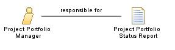

| Role: Project Portfolio Manager |
 |
|
Relationships
 |
||
| Additionally Performs | ||
|---|---|---|
Main Description
| This role will determine the set of plans by which the portfolio business objectives will be met and the controls to enable adjustment before failure. There will be regularly scheduled portfolio reviews facilitated by this role with the portfolio sponsor and portfolio stakeholders, to provide management visibility of the status of the project portfolio. This role will establish the Project Portfolio Management System to create the environment to manage the project portfolio and will exercise this responsibility within the business constraints that their organization has established. This role will use documented processes and procedures to collect, assess, and manage information about the projects and programs in the project portfolio. This role will work directly with the project managers and program managers to determine the procedure used to gather the information needed to manage the portfolio. |
Staffing
| Skills |
|
|---|---|
| Assignment Approaches | This role's assignments are often associated with project office or program office teams in larger projects or programs, or
in the project office of a business executive responsible for a portfolio of projects within their organizational,
departmental, functional, or geographical responsibility. The size, diversity or complexity of projects within the project portfolio will determine the level of skills or experience warranted for the assignment. |
| © Copyright IBM Corp. 1987, 2012 All Rights Reserved Property of IBM These materials are intended only for use as part of an IBM engagement |